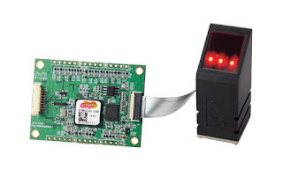
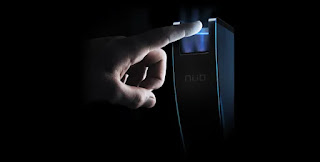

Estos sensores operan mediante la detección de diferencias de temperatura entre las crestas (donde la piel toca directamente) y los valles (donde el aire circundante influye) de una huella dactilar. Cuando un dedo se coloca sobre el sensor, las crestas de la huella entran en contacto directo con la superficie piroeléctrica del dispositivo, generando una temperatura más alta en comparación con los valles, que no están en contacto directo con el sensor. Utilizando este contraste térmico, el sensor crea una representación en escala de grises de la huella dactilar, basada en los patrones térmicos detectados.
CLOCKIT. Fingerprint scanner. [en línea]. [consulta: 11 diciembre 2024].
Estos sensores identifican la variación de presión entre las crestas y los valles de la huella dactilar cuando un dedo toca la superficie del dispositivo. Las crestas están más cerca del sensor y crean una presión más alta, mientras que los valles, que son las capas subdérmicas más profundas de la huella, generan una presión menor.
El sensor se beneficia de su extenso conjunto de transductores de presión, los cuales permiten la creación de una imagen detallada del dedo mediante la medición precisa de la fuerza aplicada en cada uno de esos transductores distribuidos por su superficie. Esta red de transductores no solo detecta la diferencia de presión entre las crestas y los valles de la huella dactilar, sino que también es capaz de traducir esta información en una representación binaria completa y precisa del dedo escaneado.
Los sensores mecánicos pueden requerir un mantenimiento periódico para asegurar un funcionamiento correcto, lo que puede ser inconveniente y costoso.
Estos escáneres miden las pequeñas diferencias en la carga eléctrica a través de la superficie de la piel. Cuando se coloca un dedo sobre el escáner, las crestas de la huella dactilar tocan la superficie del escáner, mientras que los valles no. Esto crea un patrón de variaciones de capacitancia que puede traducirse en una imagen digital de la huella digital.
Los sensores capacitivos pueden captar detalles minuciosos de la huella dactilar, lo que aumenta la precisión en la identificación, autenticación y la velocidad de respuesta.
Los modelos más avanzados tienen una superficie muy resistente al desgaste, aunque pueden ser más sensibles a descargas electrostáticas que los sensores ópticos. Generalmente tienen un área de captura más pequeña que los sensores ópticos, lo que resulta en imágenes con menos información y puede limitar la cantidad de usuarios que pueden ser identificados de manera segura. Por lo tanto, su uso se recomienda más en aplicaciones con un número reducido de usuarios, proporcional al tamaño del sensor.
Estos son el tipo más antiguo de escáneres de huellas dactilares. Funcionan mediante un microchip sensible a la luz (ya sea un dispositivo de carga acoplada o un sensor de imagen CMOS). Cuando se coloca un dedo sobre el escáner, éste ilumina la superficie de la piel y captura una imagen de la huella digital.
Estas técnicas capturan imágenes de la huella dactilar bajo diversas condiciones de iluminación (con luces de diferentes colores, orientaciones y polarizaciones). Cada imagen individual aporta información complementaria sobre la huella, y al combinarlas adecuadamente, se obtiene una imagen mucho más detallada y confiable, incluso para huellas difíciles de capturar. Esta característica única, junto con un área de captura más grande y una mayor calidad de imagen de estos sensores, proporciona niveles de seguridad y robustez que otras tecnologías de detección no pueden igualar.
Los principales inconvenientes de estos sensores, que también se encuentran en otras tecnologías de detección, suelen surgir debido a la baja calidad y/o complejidad de las huellas dactilares capturadas (como huellas desgastadas, secas, con cicatrices, cortes, mojadas o sucias). Sin embargo, muchos de estos problemas han sido resueltos con gran eficacia por los sensores ópticos de última generación, que utilizan avanzadas técnicas de detección óptica multiespectral para manejar huellas difíciles.
CLOCKIT. Fingerprint scanner. [en línea]. [consulta: 11 diciembre 2024].
Los últimos lectores ópticos de huella dactilar sin contacto permiten capturar imágenes de uno o varios dedos en el aire, sin necesidad de tocarlos a una superficie. Esto se logra mediante una potente detección espacial de la posición del dedo, un tratamiento avanzado de la iluminación para capturar en alta resolución los detalles más finos de la huella, y un procesamiento digital de la imagen que obtiene el patrón de la huella, enviándolo a la base de datos para realizar la comparación e identificar con precisión a la persona.
Los principales inconvenientes de estos sensores, que también se encuentran en otras tecnologías de detección, suelen surgir debido a la baja calidad y/o complejidad de las huellas dactilares capturadas (como huellas desgastadas, secas, con cicatrices, cortes, mojadas o sucias). Sin embargo, muchos de estos problemas han sido resueltos con gran eficacia por los sensores ópticos de última generación, que utilizan avanzadas técnicas de detección óptica multiespectral para manejar huellas difíciles.
Planet, NÜO. 2022. ¿Cómo funciona un lector de huella? ¿Cómo funciona un lector de huella? [En línea] NÜO Planet, 14 de noviembre de 2022. [Citado el: 18 de julio de 2024.]